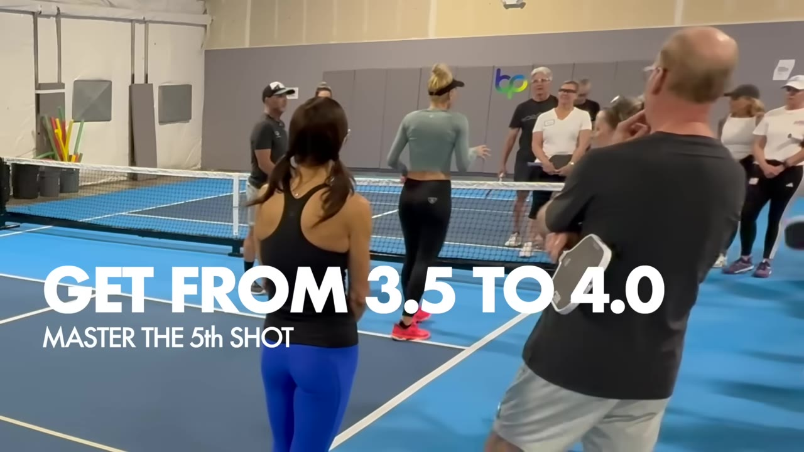
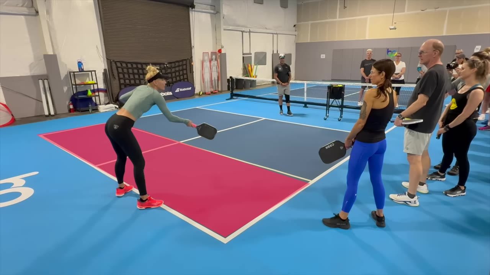
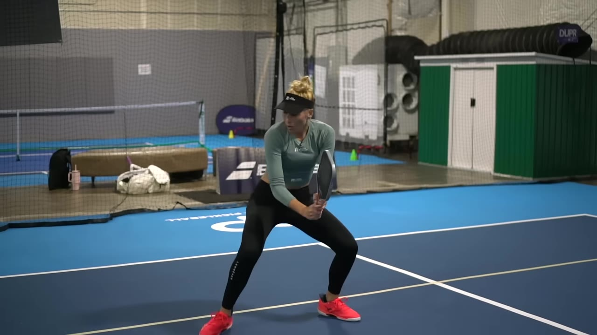
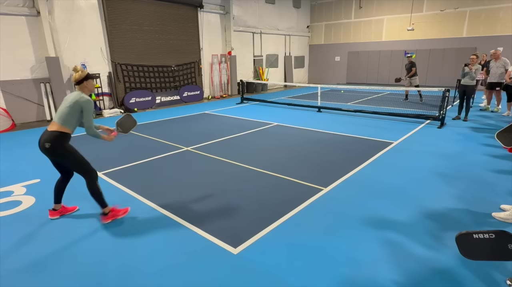
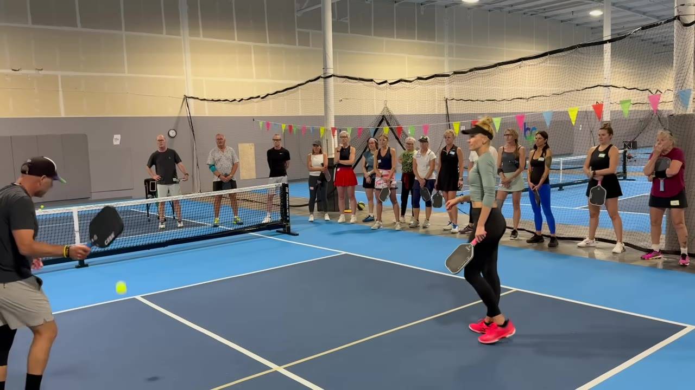

Everybody obsesses over the third shot. Jilly B says the point you keep losing is the fifth — the one you hit from the baseline before you've earned the kitchen.
Watch on YouTubeJilly B opens with a stat that lands like a gut-punch: how often do you and your partner actually get to the kitchen line after the serve and play a real dinking rally? The room guesses 20, 25, 30 percent. Pros do it 70 to 80. So why spend the session on dinking when, for most of the players in front of her, it isn't even happening a quarter of the time?

The fix is to stop fixating on the third. The action that decides whether you ever reach the line is the fifth — the ball you and your partner hit on the way in.
Let's get A and B done before we get to C and D. Let's really focus on the first four shots of the game if we want to be 4.0 and above.— Jilly B
"No man's land" is the usual term, but Jilly B doesn't like it — no man's land lets you stand on the baseline. She calls the strip from the baseline forward the "zone of death," and she wants you out of it. Hitting from back here, she says, is bad footwork and bad hygiene.

The whole game becomes a question you answer on every return: did the ball land inside the zone, or past it? Land it short and Jilly B is staying back, driving, waiting. Land it deep and she's coming in.
Here's the habit everyone has, in Jilly B's words: the ball comes, you watch it, you "have a cigarette in the lobby," and then you panic-sprint with no time to set up. The drill replaces that with a rhythm. Split-step a beat early, get on top of the ball like you're going to take it out of the air, then stop and set a stable base before you choose your shot.

The timing is the whole thing. Split-step when the ball is on your opponent's paddle; build your stable base when it's on yours. Wait until contact to split and you're already late.
There's a split step happening. Sometimes it's so fast you don't notice it — you'll hear it.— Scott
Once you're set, the menu opens up: a drop, a drive, or a "drip" — Jilly B's favorite, a super-soft low drive.
Then she pulls students onto the court and yells the cadence at them: "Go, go, go, go — stop." Most of them wait, then run through the ball, the exact opposite of what she's after. It's meant to feel uncomfortable; reversing the watch-and-walk habit is hard, but it's the gate to the next level.

Last level: the return comes back deep, into your zone of death. The 3.5 player bangs it — and wins maybe 40 to 50 percent of those. The 4.0-plus, 5.0, 6.0 player hits a 60 percent line drive to survive, resets to the spot from the footwork drill, and waits for the short ball to attack.

It looks hard. It isn't. The point Jilly B keeps hammering is that the drive isn't there to win the rally — it's there to stay alive until you get the ball you can actually finish.
When you remove that pressure from yourself and tell yourself, this drive is to survive… then the pressure vanishes. Totally vanishes.— Jilly B
Same idea on second balls, on deep returns, on anything you can't attack cleanly: stall together, hit the 60 percent line drive, wait for the ball that lands short — then off you go, back to level one, and murder it if you want.